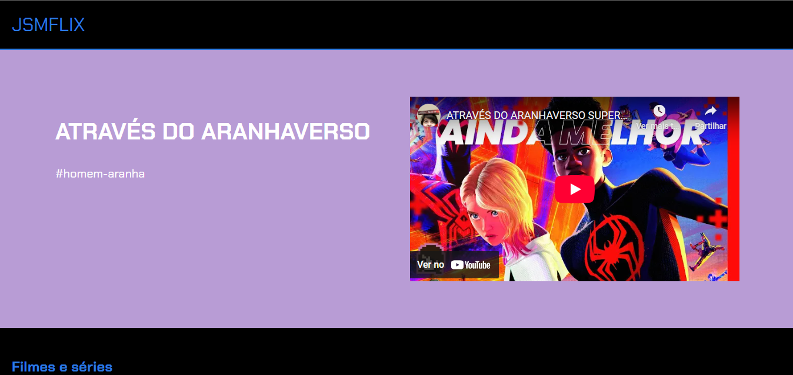
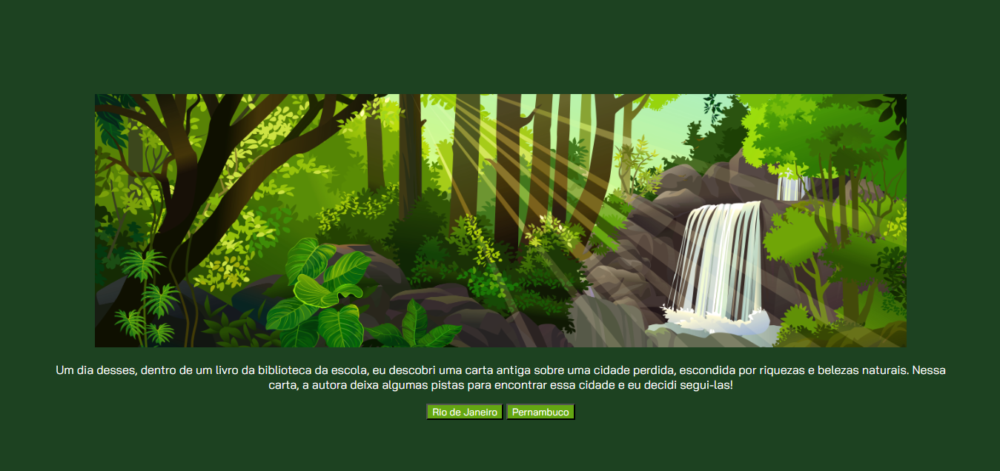

Meus projetos

Divulgando o filme: Homem aranha através do aranha verso
Este projeto é uma página web que apresenta um canal do YouTube que esta fazendo a divulgação e a critica do filme

Decidindo o Futuro: Uma Jornada Interativa sobre a Inteligência Artificial(projeto da professora da curso)
Este projeto é um jogo interativo baseado em navegador que explora o impacto e as implicações da Inteligência Artificial (IA) na sociedade, permitindo que as pessoas jogadoras façam escolhas que influenciam o desenrolar de uma narrativa sobre o futuro da IA.

cidade perdida: Uma Aventura Interativa
Este projeto cria uma experiência interativa educativa sobre uma misteriosa cidade perdida no Brasil, buscando assim o uso da logica e do pensamento crítico